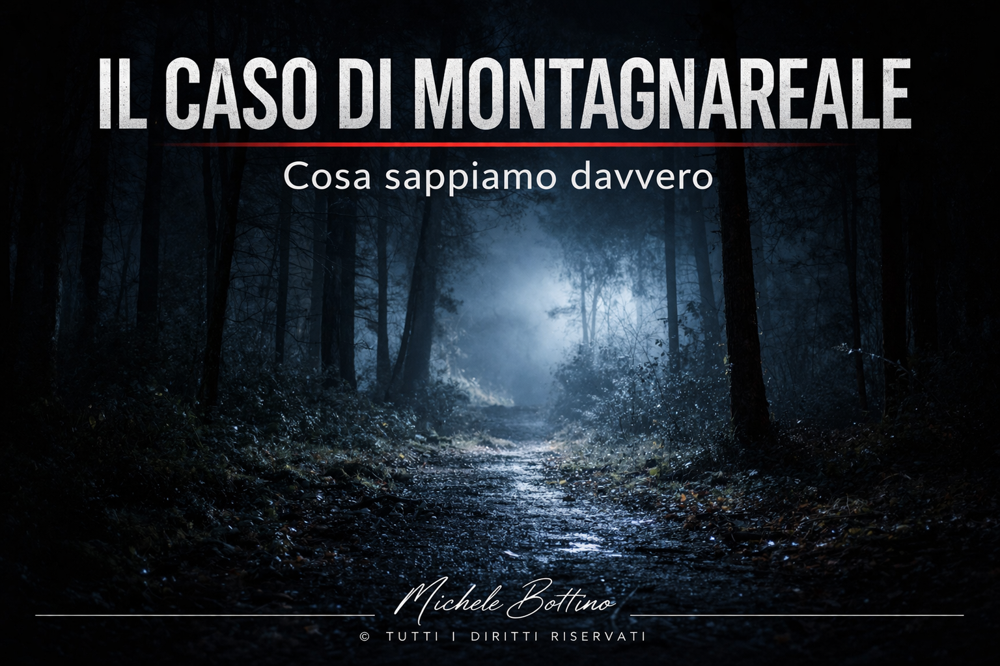

Nelle prime settimane del 2026, in un’area boschiva di Montagnareale, in Sicilia, tre uomini vengono trovati morti. I corpi presentano ferite da arma da fuoco. Le indagini vengono avviate immediatamente, ma al momento non è stato accertato né il movente né la dinamica dell’evento. Questo è il perimetro reale del caso. Le informazioni disponibili indicano che le vittime sarebbero cacciatori. Anche i dettagli relativi ai colpi, alla schiena e al petto, contribuiscono a delineare una prima descrizione dell’accaduto. Si tratta però di elementi che appartengono ancora al livello delle informazioni riportate e non a quello delle verifiche consolidate. Sul piano investigativo, l’attività si concentra su rilievi tecnici e analisi delle celle telefoniche. Sono passaggi tipici di una fase iniziale, utili a costruire una base operativa, ma ancora insufficienti a definire una ricostruzione. La struttura del caso, allo stato attuale, è semplice: tre vittime, un contesto isolato, l’uso di un’arma da fuoco. Accanto a questi dati, esistono elementi che iniziano a orientare la lettura dell’evento, ma che non hanno ancora raggiunto un livello di stabilità. È in questa fase che si determina la direzione del caso. Quando mancano elementi definitivi, ogni nuova informazione tende a colmare i vuoti disponibili. Il rischio non è tanto l’errore immediato, quanto la costruzione progressiva di una spiegazione coerente prima che sia verificata. Nel caso di Montagnareale, questa trasformazione non è ancora avvenuta. Non è stata individuata una responsabilità, né una ricostruzione condivisa. Il quadro resta aperto. Le prossime evoluzioni saranno decisive. L’emergere di un movente, di relazioni tra le vittime o di un possibile responsabile potrebbe rapidamente ridefinire la lettura del caso. È in questo passaggio che un evento tende a trasformarsi in una narrazione strutturata. Questo processo, tuttavia, non è neutro. Ogni interpretazione introduce una direzione e restringe il campo delle possibilità. Se non sostenuta da elementi solidi, questa riduzione può generare distorsioni difficili da correggere. Per questo motivo, la fase iniziale di un’indagine è anche la più delicata. È il momento in cui è ancora possibile distinguere con chiarezza tra ciò che è accertato e ciò che non lo è. Il triplice omicidio di Montagnareale si trova esattamente in questo punto.
